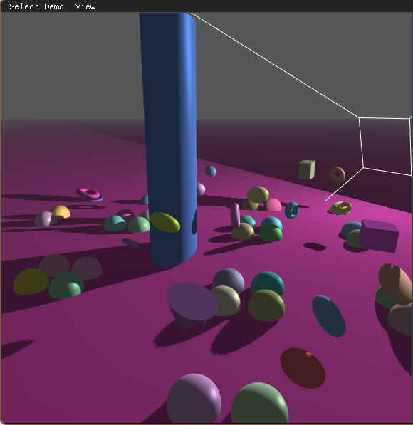

3D Graphics

This project implements real-time dynamic shadow mapping in a 3D scene using C++ and OpenGL. The main idea is to first render the scene from the light source's point of view to create a depth texture. Then, we use this texture in a second pass to check if objects are hidden from the light and should be in shadow.
FrameBuffer class to offscreen-render the scene's depth values from the light's perspective into a depth texture (DEPTH_COMPONENT24).Camera class to act as the light source. This allows for realistic shadow casting and easily updates the view and projection matrices.sampler2DShadow in GLSL to create smoother and softer shadow edges.Implementing shadow mapping was challenging but very rewarding. The biggest hurdle was the complex matrix math needed to transform coordinates from world space to the light's clip space, as well as fixing shadow bleeding issues. By using the debug modes to see the light frustum and depth map, I was able to find exactly where the depth calculations failed.
This project gave me a much stronger understanding of projective texturing and how modern graphics APIs handle depth comparisons. In the future, I plan to learn advanced techniques like Cascaded Shadow Maps (CSM) or Variance Shadow Mapping to improve shadow quality in larger scenes.